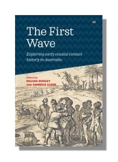

The First Wave
Exploring early coastal contact history in Australia.
Edited by Gillian Dooley and Danielle Clode
The European maritime explorers who first visited the bays and beaches of Australia brought with them diverse assumptions about the inhabitants of the country, most of them based on sketchy or non-existent knowledge, contemporary theories like the idea of the noble savage, and an automatic belief in the superiority of European civilisation. Mutual misunderstanding was almost universal, whether it resulted in violence or apparently friendly transactions.
Written for a general audience, The First Wave brings together a variety of contributions from thought-provoking writers, including both original research and creative work. Our contributors explore the dynamics of these early encounters, from Indigenous cosmological perspectives and European history of ideas, from representations in art and literature to the role of animals, food and fire in mediating first contact encounters and Indigenous agency in exploration and shipwrecks.
The First Wave includes poetry by Yankunytjatjara Aboriginal poet Ali Cobby Eckermann, fiction by Miles Franklin award-winning Noongar author Kim Scott and Danielle Clode, and an account of the arrival of Christian missionaries in the Torres Strait Islands by Torres Strait political leader George Mye.
Published by Wakefield Press
Available in paper
Available from all good bookstores
Find your local bookstore Buy now from Wakefield Press
Praise for the book
'At its most powerful, The First Wave twines rich accounts of the past with a deep understanding of the country and cultures of particular Indigenous groups...Standout pieces amid the poems and fictional works include Clode's shining contribution, in which she reimagines the relationships between Yuin, orcas and European whalers in Twofold Bay' —Alexandra Roginski,Australian Book Review
'the complex fractal pattern of perspectives, observations and silent sight-lines both Indigenous and European . . . crystallised out from the crucial meeting on the beach . . . The First Wave also beautifully demonstrates how those observations were then recorded not only in the explorers’ journals and logbooks but also in Indigenous song and dance, so making a very different yet equally telling historical record' —Professor Elleke Boehmer,Oxford University
'This is a monumental book, and I don’t just mean in terms of weight. It is an essential work of true scholarship. This book matters, re-visiting old episodes and in the process re-visioning them.’ —Alastair Niven,former Director of Literature, British Arts Council
''a valuable contribution to any discussion of colonial settler history . . . I recommend this book to all those interested in understanding the beginnings of Australian history on the maritime edges of the continent' —Jonathon Richards,Professional Historians Australia